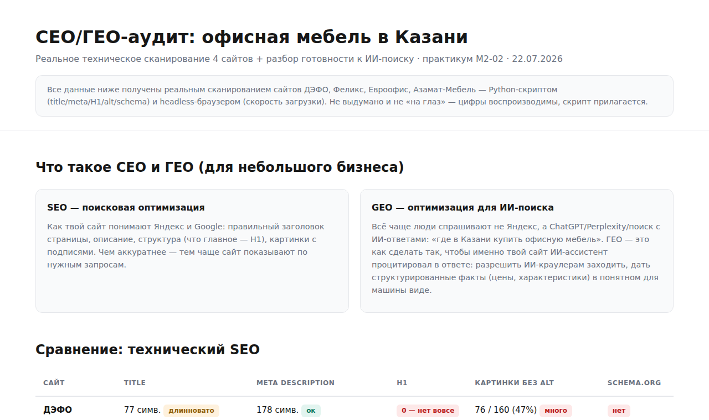
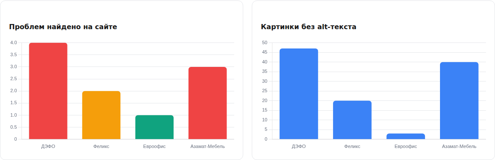

Технический аудит своего сайта и сайтов конкурентов инструментом, а не на глаз. Плюс разбор ГЕО (оптимизация для ИИ-поиска): как сделать так, чтобы именно тебя процитировал ИИ-ассистент, когда клиент спросит «где купить X».
SEO — как твой сайт понимают Яндекс и Google. ГЕО — то же самое, но для ИИ-ассистентов, которым всё чаще задают вопросы вместо поиска. Большинство небольших сайтов не занимались ни тем, ни другим системно — значит, здесь легко найти реальное преимущество, а не только у дизайна и цены.
Свой сайт (или сайт клиента) + 2–4 сайта конкурентов из практикума М2-01. Ничего скачивать не нужно — агент работает с публичными страницами.
llms.txt с описанием бизнеса для ИИ, есть ли структурированные данные о товарах (schema.org) — по ним ИИ-ассистент понимает факты, а не просто текст.Построй инструмент (скрипт), который проверяет любой сайт по SEO- и ГЕО-чек-листу: title и meta description (длина и наличие), H1, картинки без alt, структурированные данные schema.org, а также правила robots.txt для ИИ-краулеров и наличие llms.txt. Пусть выводит результат по каждому сайту и сохраняет в файл.
Результат на учебной нише (реальное сканирование 4 конкурентов из М2-01):

Настоящий прогон скрипта: у половины конкурентов не оказалось ни одного тега H1 на главной странице — базовая ошибка, которую беглый просмотр глазами не заметит.

Цифры из той же таблицы, но графиком — сразу видно, кто хуже всех (Азамат-Мебель и ДЭФО), а кто лучше всех (Евроофис).
Открыть отчёт целиком: seo-geo-audit.html · скачать инструмент: seo-geo-audit.py
Учебный момент. Инструмент — это разница между «одна проверка сейчас» и «то, чем ты будешь пользоваться каждый квартал, на любом сайте, включая новые сайты конкурентов». Тот же принцип, что и скилл из урока 4 модуля 1 — только здесь это рабочий скрипт, а не текстовая инструкция.
Прогони инструмент по моему сайту и по [конкуренты]. Собери сравнительную таблицу и подсвети, где у меня хуже, чем у лучшего из конкурентов.
На нашем прогоне нашлось: два из четырёх конкурентов — без единого H1; у двух meta description втрое длиннее нормы (обрежется в поиске); один заметно медленнее остальных (700 мс до ответа сервера против 74–215 мс у других).
Проверь по каждому сайту: разрешён ли доступ основным ИИ-краулерам, есть ли llms.txt, есть ли разметка schema.org для товаров (Product) или вопрос-ответ (FAQ).
На нашем прогоне — ни один из четырёх конкурентов не заблокировал ИИ-краулеров, но и ни один не подготовил структурированные данные под них. Это не занятая ниша конкурентами, а по-настоящему пустое поле: тот, кто сделает это первым, получает реальный шанс быть процитированным ИИ-ассистентом раньше остальных.
Из всего аудита сформулируй три конкретных действия для нашего сайта, с указанием, какую именно находку каждое из них закрывает.
Так же, как в модуле 1: попроси агента упаковать процесс в скилл «SEO/ГЕО-аудит», чтобы раз в квартал запускать одной командой на своём сайте и на новых конкурентах.
| Симптом | Причина | Решение |
|---|---|---|
| Проверили «на глаз», нашли только очевидное | Не построили инструмент, а спросили мнение | Просите именно скрипт/инструмент — находит то, что не видно взглядом (например, отсутствие H1) |
| ГЕО пропущено, только классический SEO | Тема новая, легко забыть | Отдельным шагом: краулеры, llms.txt, schema — не полагайся, что агент сам вспомнит |
| Длинный список проблем без приоритета | Не попросили синтез | Явно проси «три главных действия», а не полный список из 20 пунктов |
| Сравнение только с собой, без конкурентов | Забыли, зачем это вообще нужно | Без конкурентов непонятно, хорошо это или плохо — цифры имеют смысл только в сравнении |
Прогони инструмент на своём реальном сайте и 2–3 конкурентах. Найди свою версию «ни одного H1» — конкретную вещь, которую беглый взгляд не заметил бы. Заведи в скилл и договорись с собой: раз в квартал — повторный прогон.
Самая неожиданная находка прогона — не в конкретной ошибке title или alt, а в том, что все четыре конкурента одинаково не сделали ничего для ГЕО. Обычно конкурентный анализ ищет, у кого что лучше; здесь честный ответ — ни у кого. Значит, это не про «догнать конкурентов», а про то, кто первым займёт пустое поле.